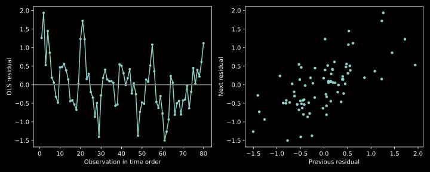

IIT Hyderabad · NPTEL · Independent study edition
Autocorrelated errors and dependent observations
12.1 Correlation changes uncertainty before it changes a coefficient formula
A regression fitted to observations in time order can leave long runs of positive or negative residuals. Those runs can indicate that adjacent observations carry overlapping information. Treating them as independent can produce an uncertainty estimate inconsistent with the actual sampling process, even when the mean relation is correctly specified.
Let $y=X\beta+\varepsilon$ with fixed full-column-rank design $X\in\mathbb R^{n\times q}$. Assume $E(\varepsilon\mid X)=0$ and define $\Omega=\operatorname{Cov}(\varepsilon\mid X)$, a positive-definite covariance matrix. Ordinary least squares still uses $A=(X^{\mathsf T}X)^{-1}X^{\mathsf T}$ and satisfies $$\widehat\beta_{\mathrm{OLS}}=\beta+A\varepsilon,\quad E(\widehat\beta_{\mathrm{OLS}}\mid X)=\beta,\quad \operatorname{Cov}(\widehat\beta_{\mathrm{OLS}}\mid X)=A\Omega A^{\mathsf T}. \tag{12.1}$$ The expectation follows from the conditional mean assumption; the covariance follows by linear transformation. Correlation between errors alone does not introduce bias into this fixed-design, mean-zero calculation.
The distinction becomes important when predictors themselves depend on unobserved errors, as in some dynamic specifications. Then $E(\varepsilon\mid X)=0$ may fail, and unbiasedness needs a new argument. It is that failure of exogeneity, rather than the mere presence of a nonzero covariance entry, that invalidates the expectation in (12.1).
Nor must every variance be larger than a counterfactual independent-error formula. Dependence can increase or decrease uncertainty in particular linear combinations, depending on the design and covariance. A precise efficiency comparison holds between correctly specified known-covariance generalized least squares and other linear unbiased estimators under that same covariance; it is proved in §12.4.
Source discussion: correlated-error model and OLS moments. This edition preserves the conditional unbiasedness calculation and avoids treating correlation alone as proof of bias.
12.2 An AR(1) recursion does not stop correlation after one lag
A parsimonious error model is the first-order autoregression $$\varepsilon_t=\rho\varepsilon_{t-1}+u_t,\qquad |\rho|<1, \tag{12.2}$$ where the innovations $u_t$ have mean zero, variance $\sigma_u^2>0$, and are uncorrelated across time and with earlier errors. The stationary solution has finite variance. The order one describes the number of directly included lagged errors in the recursion, not the number of nonzero autocovariances.
Iterate the recursion $m$ times to obtain $\varepsilon_t=\rho^m\varepsilon_{t-m}+\sum_{j=0}^{m-1}\rho^ju_{t-j}$. Under stationarity and $|\rho|<1$, the first term tends to zero in mean square. The innovation series converges in mean square because the sum of innovation variances is finite. Thus $$\varepsilon_t=\sum_{j=0}^{\infty}\rho^ju_{t-j},\qquad \sigma_\varepsilon^2=\operatorname{Var}(\varepsilon_t)=\frac{\sigma_u^2}{1-\rho^2}. \tag{12.3}$$ The geometric-series denominator is essential; values $\rho=\pm1$ do not satisfy the stationary finite-variance argument.
For nonnegative integer lag $h$, iterate forward from time $t-h$. The later innovations are uncorrelated with $\varepsilon_{t-h}$, so $$\operatorname{Cov}(\varepsilon_t,\varepsilon_{t-h}) =\rho^h\sigma_\varepsilon^2. \tag{12.4}$$ Positive $\rho$ gives positive correlations decaying with lag. Negative $\rho$ alternates the sign. Unless $\rho=0$, many lags are correlated. Higher autoregressive order similarly specifies a finite recursion, not a hard cutoff in marginal autocorrelation.
For equally spaced observations, define $R_\rho$ by $(R_\rho)_{ij}=\rho^{|i-j|}$. The error covariance is $\Omega=\sigma_\varepsilon^2R_\rho$. The innovation variance $\sigma_u^2$ and marginal error variance $\sigma_\varepsilon^2$ are different quantities. Confusing them changes both covariance entries and standard errors. Irregular time spacing requires a covariance model that uses the actual spacing rather than blindly treating every adjacent row as one equal lag.
Source recursion and covariance discussions: AR(1) construction and lagged covariance. The stationarity condition and nonzero higher-lag correlations are explicit here.
12.3 What the Durbin-Watson statistic measures
Let $e_t$ be the OLS residuals in their meaningful observation order, with $\sum_t e_t^2>0$. The Durbin-Watson statistic is $$D=\frac{\sum_{t=2}^n(e_t-e_{t-1})^2}{\sum_{t=1}^n e_t^2}. \tag{12.5}$$ Consecutive residuals with similar signs and magnitudes give small differences and a small numerator. Alternating signs increase those differences. Thus a small statistic suggests positive lag-one residual association; a large value suggests negative association. Values around two are a descriptive reference for little lag-one association, not a proof of the error model.
Define $r_*=\sum_{t=2}^n e_te_{t-1}/\sum_{t=1}^n e_t^2$. Expanding the squared differences gives the exact identity $$D=2(1-r_*)-\frac{e_1^2+e_n^2}{\sum_{t=1}^n e_t^2}. \tag{12.6}$$ The familiar approximation $D\approx2(1-r_*)$ neglects the endpoint term. A lagged regression estimate using $\sum_{t=2}^n e_{t-1}^2$ in its denominator is yet another convention; do not silently substitute it for $r_*$ in this identity.
Each squared difference is nonnegative. Also $(a-b)^2\leq2a^2+2b^2$, so summing bounds the numerator by four times the residual squared norm. Consequently $0\leq D\leq4$. This is an algebraic range, not a choice of significance cutoffs.
The null calibration depends on the design and the sampling assumptions. Fitted residuals are a projection of the errors and are not an independent sample, so an ordinary sample-correlation t test with an asserted $n-1$ degrees of freedom is not a justified substitute. Lagged dependent variables, selection of the mean model, or an incorrect ordering require additional care.
For a fixed, prespecified design under independent Gaussian errors, one can simulate the conditional null directly. Draw independent standard-normal errors, project each vector with $M=I-H$, and compute the same statistic. The unknown mean disappears because $MX=0$, and error scale cancels in the ratio. A lower-tail comparison screens positive serial correlation. This model-specific simulation does not repair an incorrect mean or an unmodeled sampling mechanism.
Source statistic and direction: Durbin-Watson algebra. The source caption sequence contains conflicting verbal directions; the squared-difference definition fixes the interpretation. The Python function is documented by statsmodels.
12.4 Known covariance gives a precise efficiency result
If $\Omega$ is known and positive definite, generalized least squares minimizes $(y-Xb)^{\mathsf T}\Omega^{-1}(y-Xb)$. Differentiation and full rank give $$\widehat\beta_{\mathrm{GLS}}=(X^{\mathsf T}\Omega^{-1}X)^{-1}X^{\mathsf T}\Omega^{-1}y. \tag{12.7}$$ Its conditional expectation is $\beta$, and its covariance is $(X^{\mathsf T}\Omega^{-1}X)^{-1}$. These claims follow by substituting $y=X\beta+\varepsilon$ and multiplying the covariance factors. Gaussianity is not needed for these moment statements.
Proposition 12.1 — known-covariance efficiency, proved here. Among estimators linear in $y$ and unbiased for every coefficient vector under this fixed design and covariance, GLS has a covariance no larger in positive-semidefinite order.
Let $A_G=(X^{\mathsf T}\Omega^{-1}X)^{-1}X^{\mathsf T}\Omega^{-1}$. Any linear unbiased estimator $Ay$ satisfies $AX=I_q$. Write $A=A_G+B$, so $BX=0$. Since $A_G\Omega=(X^{\mathsf T}\Omega^{-1}X)^{-1}X^{\mathsf T}$, the cross covariance $A_G\Omega B^{\mathsf T}$ vanishes. Therefore $$A\Omega A^{\mathsf T}-A_G\Omega A_G^{\mathsf T}=B\Omega B^{\mathsf T}.$$ For any coefficient direction $v$, $v^{\mathsf T}B\Omega B^{\mathsf T}v\geq0$ because $\Omega$ is positive definite. This is precisely the positive-semidefinite covariance comparison. Equality can occur, so the improvement is not necessarily strict. ∎
A whitening matrix $P$ satisfying $P\Omega P^{\mathsf T}=cI_n$ for a positive scalar $c$ converts GLS into ordinary least squares on $Py$ and $PX$. For stationary AR(1) errors, define $$y_1^*=\sqrt{1-\rho^2}\,y_1,\quad x_1^*=\sqrt{1-\rho^2}\,x_1,$$ $$y_t^*=y_t-\rho y_{t-1},\quad x_t^*=x_t-\rho x_{t-1}\quad(t\geq2). \tag{12.8}$$ The transformed errors are $\sqrt{1-\rho^2}\varepsilon_1,u_2,\ldots,u_n$, which are uncorrelated and all have variance $\sigma_u^2$. This proves the covariance identity and the equivalence of the transformed fit to GLS.
The first-row scaling is the Prais-Winsten stationary transformation. Dropping that row instead gives the conditional Cochrane-Orcutt transformation and discards its information. An intercept must be transformed too: its later-row entries become $1-\rho$, and its first entry is $\sqrt{1-\rho^2}$. Transforming only the response or adding a fresh untransformed intercept fits a different mean model.
Source transformations: Cochrane-Orcutt and Prais-Winsten matrices. Implementation reference: statsmodels GLS.
12.5 Estimating the dependence is an additional procedure
Real data rarely provide the true $\rho$. A feasible procedure starts with OLS residuals, estimates a lag-one coefficient, transforms the data using that estimate, refits, and repeats. One lag-regression estimate is $\widehat\rho=\sum_{t=2}^n e_te_{t-1}/\sum_{t=2}^n e_{t-1}^2$, provided the denominator is positive. It is not the same normalization as $r_*$ in the exact Durbin-Watson identity.
The laboratory implements a transparent iterative Prais-Winsten example: it restricts the estimated coefficient to $[-0.98,0.98]$ to remain inside the stationary region, allows at most 100 iterations, and stops when coefficient changes are below $10^{-10}$. The restriction is part of this teaching implementation, not an estimate supplied by the source. Other packages use different convergence rules and treatments of nonstationary estimates; reproducing their output requires matching those conventions.
The source also sketches Durbin's two-step approach. Combining a static mean with an AR(1) error recursion yields $$y_t=\rho y_{t-1}+\beta_0(1-\rho)+\beta_xx_t-\rho\beta_xx_{t-1}+u_t. \tag{12.9}$$ An initial regression on the lagged response and current and lagged covariates can estimate $\rho$ before a transformed fit. This requires an identifiable augmented design and appropriate innovation assumptions. The finite-sample augmented coefficients need not satisfy the nonlinear relation between the last coefficient and the product $-\rho\beta_x$. The laboratory labels its resulting fit as Durbin-initialized whitening rather than an exact known-covariance estimator.
Once the covariance estimate depends on the responses, the GLS matrix is random. Proposition 12.1's known-covariance comparison no longer directly establishes an exact finite-sample distribution or efficiency claim for the feasible estimator. Uncertainty can require justified asymptotics or a resampling procedure that repeats covariance estimation. Choosing an arbitrary correlation value solely to narrow an interval does not supply that justification.
Source initialization discussion: Durbin's augmented regression. An example of package-specific iteration rules is documented by the prais package; the explicit teaching implementation is not claimed to reproduce every package default.
12.6 A reproducible ordered-data construction
The assigned recordings develop theory and transformations; no R demonstration is identified in their complete caption tracks. The Python laboratory therefore supplies an explicitly original construction. It creates 80 ordered observations, a fixed varying predictor, coefficients $(2,3)$, stationary Gaussian AR(1) errors with $\rho=0.7$, and innovation standard deviation $0.5$. Its seeded random realization is retained in a reference CSV for independent checks.
| Fit or diagnostic | Result |
|---|---|
| OLS intercept; slope | $1.809371477;\ 3.010666645$ |
| Known-covariance GLS intercept; slope | $1.872134462;\ 3.046010793$ |
| True OLS standard deviations | $0.183708631;\ 0.166056904$ |
| True GLS standard deviations | $0.181568046;\ 0.157276753$ |
| Durbin-Watson statistic | $0.647275361$ |
| Exact endpoint correction in (12.6) | $0.076456569$ |
| Iterated feasible correlation estimate | $0.663376083$ |
The whitening fit and the library GLS coefficients agree numerically. The known theoretical covariance matrices satisfy the positive-semidefinite comparison, and the exact Durbin-Watson identity agrees with the library statistic. These are finite checks of the formulas on the construction. One realization's coefficient error is not a measurement of estimator bias, and a better covariance does not imply a coefficient must be closer to truth in every realization.
A fixed-design Gaussian null simulation uses 9,999 independent draws and obtains no simulated statistic as small as the observed value. The reported plus-one Monte Carlo tail value is $0.0001$, not zero. Its interpretation is conditional on the prespecified mean design, independent Gaussian null errors, and the stated lower-tail alternative. It is not evidence that every aspect of the fitted response model is correct.
Figure 12.1 preserves the ordered rows and exposes the relation between successive residuals. Randomly rearranging complete observation pairs leaves the OLS criterion unchanged but can change this diagnostic dramatically, because adjacency is part of its definition. A time-based diagnostic cannot infer a meaningful order from an arbitrarily sorted table.

Run the standalone Python laboratory without R. The code states the first-observation convention, transformed intercept, lag-estimation denominator, stationarity restriction, and stopping rule. These details are part of the algorithm, not cosmetic implementation choices.
12.7 Exercises with worked solutions
Conceptual — what does order one mean? Does AR(1) imply that errors two observations apart are uncorrelated?
Solution
No. Under the stationary recursion their lag-two covariance is $\sigma_\varepsilon^2\rho^2$, generally nonzero. The recursion directly conditions on one lag, but earlier innovations propagate through repeated multiplication by $\rho$. Order describes the conditional recurrence, not a cutoff of the marginal correlation function.
Conceptual — dependence and bias. Identify the assumption needed to preserve OLS unbiasedness when the errors are correlated.
Solution
For fixed full-rank $X$, require $E(\varepsilon\mid X)=0$. Equation (12.1) then gives $E(\widehat\beta\mid X)=\beta$ for any finite covariance. Nonzero off-diagonal covariance entries do not alter that expectation. A predictor related to the errors can violate the conditional mean condition, but that is an additional issue.
Derivation — endpoint correction. Expand the Durbin-Watson numerator and recover the exact boundary term.
Solution
The two sums of residual squares over $t=2,\ldots,n$ and $t-1=1,\ldots,n-1$ add to $2\sum_t e_t^2-e_1^2-e_n^2$. Subtract twice the adjacent-product sum and divide by the full squared norm. The result is (12.6). Dropping the endpoint term is an approximation whose accuracy depends on its actual size.
Derivation — transform the intercept. Show why the first observation receives a different scale in stationary Prais-Winsten, and state the transformed intercept column.
Solution
The stationary first error has variance $\sigma_u^2/(1-\rho^2)$. Multiplication by $\sqrt{1-\rho^2}$ makes its variance $\sigma_u^2$, matching later innovations. The first intercept entry receives that same factor. Every later difference of intercept entries is $1-\rho$. Transforming the full design as well as the response keeps the coefficient vector attached to the original mean relation.
Computation — known covariance versus estimated covariance. Run the lab and compare its GLS, whitening, and feasible fits. Which equality is an algebraic requirement?
Solution
Known-covariance GLS and the stationary whitening transformation must agree because they minimize equivalent quadratic criteria; the program asserts agreement at tolerance $10^{-11}$. The feasible fit estimates a correlation $0.663376083$ rather than using the generating value $0.7$, so its coefficients need not equal the known-covariance fit. Nor must conditional Cochrane-Orcutt agree, since it omits the first observation's criterion contribution.
Computational design — calibrate the actual statistic. Why does the lab project every simulated null error vector, and why does it report a plus-one value after zero lower-tail hits?
Solution
Projection reproduces the dependence and constraints induced by fitting the fixed mean design. Computing DW on raw independent errors would simulate a different diagnostic. Under the stated null, the unknown linear mean vanishes after projection and scale cancels. The plus-one calculation is $(0+1)/(9999+1)=0.0001$, retaining a finite Monte Carlo tail resolution rather than claiming an impossible exact zero probability. If the original design had been selected from the responses, that selection would also need to enter the simulation procedure.
Dependence concerns how different observations share unexplained variation. Normality concerns the conditional distributional shape. Neither can be diagnosed simply from the other. Chapter 13 next separates pooled response distributions, model errors, and the projected residuals to which a test is actually applied.
Python laboratory
Run labs/ch12.py from the course folder.
Data and figure paths, when used, are resolved by the program. Dependencies are listed in
requirements.txt.
Complete runnable Python source
"""Original AR1 regression construction implementing the lecture's methods."""
import argparse
from pathlib import Path
import numpy as np
import pandas as pd
import statsmodels.api as sm
from statsmodels.stats.stattools import durbin_watson
def prais_winsten(y, design, rho):
"""Known-rho stationary whitening, including the first observation."""
if not abs(rho) < 1:
raise ValueError("Stationary whitening requires abs(rho)<1")
transformed_y = np.r_[np.sqrt(1-rho**2)*y[0], y[1:]-rho*y[:-1]]
transformed_x = np.vstack([
np.sqrt(1-rho**2)*design[0], design[1:]-rho*design[:-1]])
return sm.OLS(transformed_y, transformed_x).fit()
def main():
parser = argparse.ArgumentParser(description=__doc__)
parser.add_argument(
"--plots", help="Output folder for residual-order figure")
args = parser.parse_args()
np.set_printoptions(precision=9, suppress=True)
n, rho, innovation_sd = 80, 0.7, 0.5
rng = np.random.default_rng(20261103)
row = np.arange(n)
x = np.sin(0.35*row) + np.linspace(-1, 1, n)
design = sm.add_constant(x)
error = np.empty(n)
error[0] = rng.normal(scale=innovation_sd/np.sqrt(1-rho**2))
for i in range(1, n):
error[i] = rho*error[i-1]+rng.normal(scale=innovation_sd)
y = design @ np.array([2.0, 3.0]) + error
covariance = innovation_sd**2/(1-rho**2)*rho**np.abs(row[:, None]-row)
ols = sm.OLS(y, design).fit()
gls = sm.GLS(y, design, sigma=covariance).fit()
pw = prais_winsten(y, design, rho)
np.testing.assert_allclose(gls.params, pw.params, atol=1e-11)
whitening = np.eye(n)
whitening[0, 0] = np.sqrt(1-rho**2)
whitening[np.arange(1, n), np.arange(n-1)] = -rho
np.testing.assert_allclose(whitening @ covariance @ whitening.T,
innovation_sd**2*np.eye(n), atol=1e-12)
a = np.linalg.pinv(design)
true_ols_cov = a @ covariance @ a.T
true_gls_cov = np.linalg.inv(
design.T @ np.linalg.solve(covariance, design))
assert np.linalg.eigvalsh(true_ols_cov-true_gls_cov).min() > -1e-12
residual = ols.resid
dw = np.sum(np.diff(residual)**2)/np.sum(residual**2)
lag_ratio = residual[1:] @ residual[:-1]/(residual @ residual)
boundary = (residual[0]**2+residual[-1]**2)/(residual @ residual)
np.testing.assert_allclose(dw, 2*(1-lag_ratio)-boundary, atol=1e-12)
np.testing.assert_allclose(dw, durbin_watson(residual), atol=1e-12)
co = sm.OLS(y[1:]-rho*y[:-1], design[1:]-rho*design[:-1]).fit()
fitted = ols
converged = False
for iteration in range(1, 101):
e = y-design @ fitted.params
estimated_rho = float(np.clip((e[:-1] @ e[1:])/(e[:-1] @ e[:-1]),
-0.98, 0.98))
newfit = prais_winsten(y, design, estimated_rho)
if np.max(np.abs(newfit.params-fitted.params)) < 1e-10:
fitted = newfit
converged = True
break
fitted = newfit
augmented = np.column_stack([np.ones(n-1), y[:-1], x[1:], x[:-1]])
assert np.linalg.matrix_rank(augmented) == 4
initial = sm.OLS(y[1:], augmented).fit().params[1]
durbin_fit = prais_winsten(y, design, float(np.clip(initial, -0.98, 0.98)))
print("data: original seeded AR1 construction, not source observations")
print("n rho innovation_sd:", n, rho, innovation_sd)
print("OLS coefficients:", np.round(ols.params, 9))
print("known_covariance_GLS coefficients:", np.round(gls.params, 9))
print("Prais_Winsten agrees with GLS: passed")
print("conditional_Cochrane_Orcutt coefficients:", np.round(co.params, 9))
print("true_OLS_standard_deviations:", np.round(
np.sqrt(np.diag(true_ols_cov)), 9))
print("true_GLS_standard_deviations:", np.round(
np.sqrt(np.diag(true_gls_cov)), 9))
print("DW lag_ratio endpoint_correction:",
np.round([dw, lag_ratio, boundary], 9))
null_rng = np.random.default_rng(20261104)
null_error = null_rng.normal(size=(n, 9999))
null_residual = null_error-design @ (a @ null_error)
null_numerator = np.sum(np.diff(null_residual, axis=0)**2, axis=0)
null_dw = null_numerator/np.sum(null_residual**2, axis=0)
count = int(np.count_nonzero(null_dw <= dw))
print("Gaussian_fixed_design_DW_MC: lower_tail_count draws p_plus1:",
count, len(null_dw), (count+1)/(len(null_dw)+1))
print("iterated_PW rho iterations converged:",
round(estimated_rho, 9), iteration, converged)
print("iterated_PW coefficients:", np.round(fitted.params, 9))
print("Durbin_initial_rho:", round(initial, 9))
print("Durbin_initialized_PW coefficients:",
np.round(durbin_fit.params, 9))
if args.plots:
import matplotlib
matplotlib.use("Agg")
import matplotlib.pyplot as plt
target = Path(args.plots)
target.mkdir(parents=True, exist_ok=True)
with plt.style.context("dark_background"):
fig, axes = plt.subplots(1, 2, figsize=(10, 4))
axes[0].plot(row+1, residual, "o-", markersize=3)
axes[0].axhline(0, color="gray")
axes[0].set(xlabel="Observation in time order",
ylabel="OLS residual")
axes[1].scatter(residual[:-1], residual[1:], s=12)
axes[1].set(xlabel="Previous residual", ylabel="Next residual")
fig.tight_layout()
fig.savefig(target / "ch12-ar1-residuals.svg")
plt.close(fig)
# Optional reference CSV is deterministic and retained inside the project.
target = Path(__file__).resolve().parent / "data/ch12-ar1-construction.csv"
pd.DataFrame({"x": x, "y": y}).to_csv(target, index=False)
print("all assertions passed: whitening, GLS, "
"covariance order, DW identity")
if __name__ == "__main__":
main()
Recorded execution output
data: original seeded AR1 construction, not source observations
n rho innovation_sd: 80 0.7 0.5
OLS coefficients: [1.809371477 3.010666645]
known_covariance_GLS coefficients: [1.872134462 3.046010793]
Prais_Winsten agrees with GLS: passed
conditional_Cochrane_Orcutt coefficients: [1.771527355 3.122922415]
true_OLS_standard_deviations: [0.183708631 0.166056904]
true_GLS_standard_deviations: [0.181568046 0.157276753]
DW lag_ratio endpoint_correction: [0.647275361 0.638134035 0.076456569]
Gaussian_fixed_design_DW_MC: lower_tail_count draws p_plus1: 0 9999 0.0001
iterated_PW rho iterations converged: 0.663376083 7 True
iterated_PW coefficients: [1.862893902 3.04076057 ]
Durbin_initial_rho: 0.618739345
Durbin_initialized_PW coefficients: [1.853883016 3.035367551]
all assertions passed: whitening, GLS, covariance order, DW identity